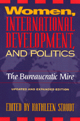

New edition reflects the intensified interest in women's empowerment in developing countries demonstrated by the Beijing Conference
New edition reflects the intensified interest in women's empowerment in developing countries demonstrated by the Beijing Conference


 New edition reflects the intensified interest in women's empowerment in developing countries demonstrated by the Beijing Conference
New edition reflects the intensified interest in women's empowerment in developing countries demonstrated by the Beijing Conference

|  |
Women, International Development, and PoliticsThe Bureaucratic MireUpdated and Expanded Editionedited by Kathleen Staudtpaper EAN: 978-1-56639-546-5 (ISBN: 1-56639-546-1) |
In the seven years since the first edition of this book, global attention has focused on some remarkable transitions to democracy on different continents. Unfortunately, those transitions have often failed to improve the situation of women, and democratic practices have not included women in government, homes, and workplaces.
At the same time, non-governmental organizations have continued to expand a policy agenda with a concern for women, thanks to the Fourth World Congress on Women and a series of United Nations-affiliated meetings leading up to the one on population and development in Cairo in 1994 and, most important, the Beijing Conference in December 1995, attended by 50,000 people.
Two new essays and a new conclusion reflect the upsurge of interest in women and development since 1990. An introductory essay by Sally Baden and Anne Marie Goetz focuses on the conflict over the term "gender" at the Beijing Conference and the continuing divisions between conservative women and feminists and also between representatives of the North and South.
Excerpt available at www.temple.edu/tempress
Preface to the 1997 Edition
Preface to the 1990 Edition
1. Introduction: "Gender Politics in Bureaucracy: Theoretical Issues in Comparative Perspective" – Kathleen Staudt
Part I: Women's Political Organizations: Links with Bureaucracy
2. "Who Needs [Sex] When You Can Have [Gender]? Conflicting Discourses at Beijing" – Sally Baden and Anne Marie Goetz
3. "Contradictions of a 'Women's Space' in a Male-Dominant State: The Political Role of the Commissions on the Status of Women in Postauthoritarian Brazil" – Sonia E. Alvarez
4. "Hierarchy and Class in Women's Organizations: A Case from Northern Mexico" – Gay Young
Part II: International Agencies
5. "Can an Aid Bureaucracy Empower Women?" – Karin Himmelstrand
6. "The Adaptability of International Development Agencies: The Response of the World Bank to Women in Development" – N�ket Kardam
7. "The Inter-American Foundation and Gender Issues: A Feminist View" – Sally W. Yudelman
8. "The Feminist Agenda in Population: Private Voluntary Organizations" – Judith Helzner and Bonnie Shepard
Part III. National Agencies
9. "The Malawi Case: Enclave Politics, Core Resistance, 'Nkhoswe No. 1'" – David Hirschmann
10. "Farming Women, Public Policy, and the Women's Ministry: A Case Study from Cameroon" – Barbara Lewis
11. "Tough Row to Hoe: Women in Nicaragua's Agricultural Cooperatives" – Rural Women's Research Team, Center for the Investigation and Study of Agrarian Reform (CIERA)
Part IV. Tinkering with Bureaucracy: Internal Politics, Procedures, and Plans
12. "Women in FAO Projects: Cases from Asia, the Near East, and Africa" – Alice Carloni
13. "Getting to the Third World: Agencies as Gatekeepers" – Katherine Jensen
14. "Planning Social Change: A Misdirected Vision" – Cathy Small
15. "Mainstreaming Women and Development: Four Agency Approaches" – Rounaq Jahan
16. Conclusion: "Strategies for the Future" – Kathleen Staudt and Kristen Timothy
List of Contributors
 | Kathleen Staudt is Professor of Political Science at the University of Texas at El Paso. |
Women's Studies
Political Science and Public Policy
African Studies
Women in the Political Economy, edited by Ronnie J. Steinberg.
No longer active.
Women in the Political Economy, edited by Ronnie J. Steinberg, includes books on women and issues of work, family, social movements, politics, feminism, and empowerment. It emphasizes women's roles in society and the social construction of gender and also explores current policy issues like comparable worth, international development, job training, and parental leave.
© 2015 Temple University. All Rights Reserved. This page: http://www.temple.edu/tempress/titles/639_reg.html.